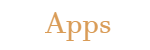

| |
 |
 |
 |
Welcome to Jason's Programming Portfolio!
This webpage is created by Jason Wu, a first year student at the University of Rhode Island. Majoring in Computer Science,
the focus of this page
is to showcase all the projects and portfolio achievements completed throughout my journy in my college
carrer. Within my freshman year, this page will show
a variety of work such as the usage of HTML (HyperText Markup Language), Javascript,
Animations, Images, Apps and Games!